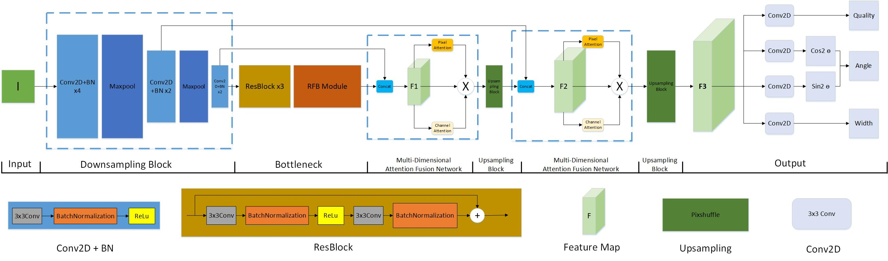

Qian Feng
Hi there! I'm a final-year PhD candidate at TUM and meanwhile research scientist at Agile Robots SE. My research focuses on learning based robotic grasping and manipulation, LLM based task planning, sim2real, tactile sensors etc,.
Qian Feng is a robotic researcher working on machine learning and robotics. He received his Bachelors in Mechatronics at Zhejiang University, and his master in Robotics at Technical University of Munich.
Formal Bio Github G. Scholar LinkedIn Twitter
qian.feng@tum.de

Efficient Grasp Detection Network with Gaussian-based Grasp Representation for Robotic Manipulation
Hu Cao, Guang Chen, Zhijun Li, Qian Feng, Jianjie Lin, Alois Knoll
IEEE/ASME Transactions on Mechatronics (Journal, JCR Q1, IF-5.867), 2022
PDF •
2023
Associate Editor, IEEE International Conference on Robotics and Automation (ICRA)